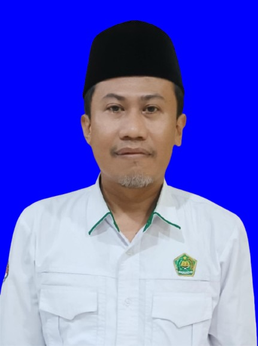
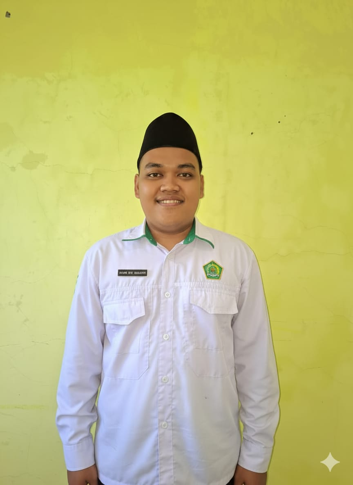
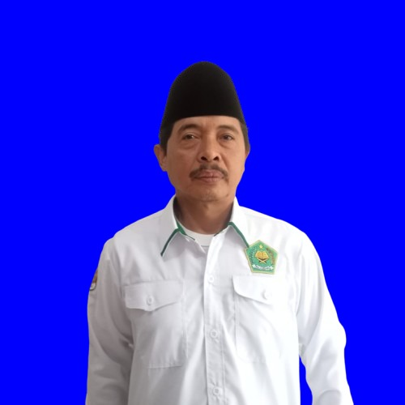

Kepala KUA
IKMAL MUNTADHOR, S.HI,.M.Sy
Alamat Rumah
Dusun Kidul Pasar RT.01 RW.15 Desa Rambipuji Kec. Rambipuji
Tugas Pokok
- Memimpin dan mengoordinasikan seluruh kegiatan di KUA.
- Merumuskan visi, misi, dan rencana strategis KUA.
- Melakukan pengawasan dan evaluasi terhadap pelaksanaan tugas pegawai.
Uraian Tugas
- Seluruh Layanan KUA, termasuk: Pencatatan nikah (dalam dan luar negeri), rujuk, itsbat nikah, dan perjanjian perkawinan.
- Bimbingan perkawinan dan keluarga sakinah.
- Pelayanan masjid, zakat, wakaf, dan penyuluhan keagamaan.
- Administrasi umum dan pelaporan.

Penghulu Ahli Pertama
MUHAMMAD MISBAKHUL ULUM, S.H
Alamat Rumah
Dusun Langon RT 01 RW 30 Desa Ambulu Kec. Ambulu
Tugas Pokok
- Melaksanakan pelayanan dan bimbingan nikah atau rujuk.
- Melakukan pengembangan kepenghuluan dan bimbingan masyarakat Islam.
Layanan Yang Ditangani
- Pencatatan nikah (dalam dan luar negeri), pernikahan campuran, rujuk, dan itsbat nikah.
- Rekomendasi nikah dan pencatatan perjanjian perkawinan.
- Legalisasi buku nikah dan penerbitan duplikat buku nikah.
- Pencatatan perubahan status nikah dan perubahan data perseorangan.
- Surat keterangan status pencatatan pernikahan.
- Bimbingan perkawinan bagi calon pengantin, usia nikah (BRUN), dan usia sekolah (BRUS).
- Layanan konseling dan mediasi keluarga, serta penanganan kasus pernikahan.
Penyuluh Agama Islam Ahli Muda
TUTIK HIDAYATI, S.Ag
Alamat Rumah
Perumahan Kodam V Brawijaya Blok Ta No.83 Kel. Mangli Kec. Kaliwates
Tugas Pokok
- Memberikan bimbingan dan penyuluhan kepada masyarakat mengenai ajaran agama Islam.
Uraian Tugas
- Bimbingan perkawinan bagi calon pengantin, usia nikah (BRUN), dan usia sekolah (BRUS).
- Layanan konseling dan mediasi keluarga.
- Layanan Administrasi dan Penyuluhan bidang haji, keluarga sakinah, dan pencegahan NAPZA dan HIV/AIDS.
- Layanan Administrasi pendataan dan pembinaan majelis taklim, dan Kelompok Binaan.

Penghulu Ahli Pertama
AHMAD TEDY HARIYANTO S.Sos
Alamat Rumah
Jubung Sukorambi Jember
Tugas Pokok
- Melaksanakan pelayanan dan bimbingan nikah atau rujuk.
- Melakukan pengembangan kepenghuluan dan bimbingan masyarakat Islam.
Uraian Tugas
- Pencatatan nikah (dalam dan luar negeri), pernikahan campuran, rujuk, dan itsbat nikah.
- Rekomendasi nikah dan pencatatan perjanjian perkawinan.
- Legalisasi buku nikah dan penerbitan duplikat buku nikah.
- Pencatatan perubahan status nikah dan perubahan data perseorangan.
- Surat keterangan status pencatatan pernikahan.
- Bimbingan perkawinan bagi calon pengantin, usia nikah (BRUN), dan usia sekolah (BRUS).
- Layanan konseling dan mediasi keluarga, serta penanganan kasus pernikahan.
Penyuluh Agama Islam
M. SA’ID, S.Th.I
Alamat Rumah
Dusun Rejosari Rt 02 Rw 11 Ds. Gumelat Kec. Balung Jember
Tugas Pokok
- Memberikan bimbingan dan penyuluhan kepada masyarakat mengenai ajaran agama Islam.
Uraian Tugas
- Layanan Administrasi Wakaf dan Penyuluhan bidang pemberdayaan wakaf, anti korupsi.
- Layanan Administrasi pendataan dan pembinaan kemasjidan dan SIMAS.

Pengawas Madrasah
SAIFUL BAHRI S.Pd.I, M.Pd.I
Alamat Rumah
Sukorambi Jember
Tugas Pokok
- Melaksanakan pengawasan terhadap Madrasah Ibtidaiyah (MI) di Wilayah Panti
Uraian Tugas
- Memberikan masukan terhadap layanan pendidikan agama, khususnya kegiatan majelis taklim untuk anak usia sekolah.
- Terlibat dalam layanan Bimbingan Remaja Usia Sekolah (BRUS) serta koordinasi pembinaan madrasah diniyah takmiliyah.
BELUM ADA FOTO
Pengawas RA
ITA NOVITARINI S.Pd., M.Pd.
Alamat Rumah
Kaliwates Jember
Tugas Pokok
- Melaksanakan pengawasan terhadap Raudhatul Athfal (RA) di wilayah kerja KUA Panti.
Uraian Tugas
- Membantu pelaksanaan program bimbingan keagamaan usia dini.
- Berperan aktif dalam edukasi keagamaan di lembaga pendidikan nonformal yang menjadi binaan KUA.
Penyuluh Agama Islam
ANIS AFROKHIYAH, S.Pd.I
Alamat Rumah
Dusun Karanganom RT 06 RW 10 Desa Serut Kec. Panti
Tugas Pokok
- Memberikan bimbingan dan penyuluhan kepada masyarakat mengenai ajaran agama Islam.
Uraian Tugas
- Layanan Administrasi pendataan dan pembinaan Ponpes dan Madin.
- Petugas Pelayanan PTSP.
- Penyuluhan bidang moderasi beragama, kerukunan umat beragama, pencegahan gerakan keagamaan bermasalah.

Penyuluh Agama Islam
AHMAD SAHUD SP.d I
Alamat Rumah
Badean Wetan Desa Serut Kec. Panti
Tugas Pokok
- Memberikan bimbingan dan penyuluhan kepada masyarakat mengenai ajaran Agama Islam.
Uraian Tugas
- Penyuluhan bidang produk halal, zakat, dan ekonomi umat.
- Layanan Administrasi pendataan dan pembinaan TPQ.
- Petugas Pelayanan PTSP.
Penata Layanan Operasional
FINA AGUSTIN, SE
Alamat Rumah
Dusun Krajan RT 02 RW 01 Desa Karang Pring Kec. Sukorambi
Tugas Pokok
- Melaksanakan tugas dalam lingkup tata kelola layanan teknis sesuai prosedur.
Uraian Tugas
- Pengoperasian aplikasi SIMKAH dan input data pendaftaran Nikah.
- Pemeliharaan dan pembaruan data layanan KUA.
- Dukungan teknis dalam pelaksanaan layanan operasional.
- Penyusunan laporan bantuan operasional perkantoran dan SPJ Haji.

Operator Layanan Operasional
AHMAD FAUZI
Alamat Rumah
Dusun Krajan RT 01 RW 04 Desa Sukorejo Kec. Bangsalsari
Tugas Pokok
- Melaksanakan tugas dalam lingkup teknis layanan operasional.
Uraian Tugas
- Administrasi surat menyurat dan kearsipan.
- Pengelolaan data dan dokumentasi layanan KUA.
- Koordinasi layanan operasional harian.
- Penyusunan statistik layanan dan bimbingan masyarakat Islam.
BELUM ADA FOTO
Pengawas Ahli Madya PAI
BADRUS SOLEH, S.Ag., M.Pd.
Alamat Rumah
Perum Griya Panti Raya C. 11 Panti
Uraian Tugas
- Supervisi Akademik & Manajerial Pengembangan PAI.
- Pembinaan Profesional Guru PAI serta Pemantauan Kinerja.
- Fasilitasi Pengembangan Keprofesian Berkelanjutan (PKB).
BELUM ADA FOTO
Pengawas PAI
WAHYU NUR INDAH, S.Pd.I.,M.Pd.I
Alamat Rumah
Jl. Manyar GG Antrokan Kel. Slawu Kec. Patrang
Tugas Pokok
- Melaksanakan pengawasan Sekolah Ahli Madya TK/RA/SD/MI di Wilayah Panti.
Uraian Tugas
- Memberikan masukan terhadap layanan pendidikan agama, khususnya kegiatan majelis taklim anak usia sekolah.
- Terlibat dalam layanan Bimbingan Remaja Usia Sekolah (BRUS).
BELUM ADA FOTO
Pengawas Sekolah Ahli Madya
MUHAMMAD YASIN YUSUF GHOZALI S.Pd.
Alamat Rumah
Gumukmas Jember
Tugas Pokok
- Melaksanakan pengawasan Sekolah Ahli Madya Tingkat Menengah di Wilayah Panti.
Uraian Tugas
- Memberikan masukan terhadap layanan pendidikan agama sekolah menengah.
- Terlibat dalam koordinasi pembinaan bimbingan remaja dan siswa.